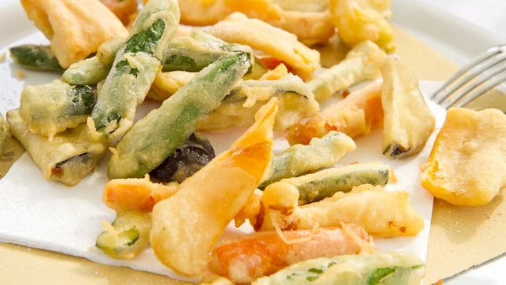

Tempura com Legumes

Ingredientes
- 1 xícara (chá) de cenoura ralada
- 1 xícara (chá) de cebola fatiada
- 1 xícara (chá) de cebolinha picada
- 2 xícaras (chá) de repolho picado
-
500 g de camarão médio limpo (pode ser com a casca, porém sem cabeça)
Massa
- 2 xícaras (chá) de água gelada/li>
- 1 xícara (chá) de farinha de trigo
- 1 colher (sobremesa) de sal
- 1 colher (café) rasa de fermento em pó
- 1 saquinho de tempero pronto (amarelo ou laranja) - opcional
Modo de Preparo
- Em uma travessa grande misturar todos os ingredientes da massa.
- Misturar bem.
- Acrescente os legumes e o camarão.
- Aquecer bastante óleo em uma frigideira.
- Ir colocando pequenas porções no óleo quente.
- Deixe dourar de um lado e vire do outro.
- Retire do óleo quente e deixe escorrer em papel absorvente.